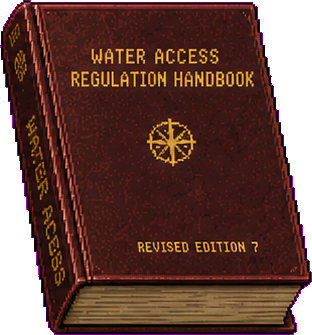

把教程放进世界
玩家通过手册学习受理范围、具体表单和核验顺序，而不是被系统弹窗直接告知答案。

一套存在于书架、工作台和剧情中的治理知识系统。玩家不是从菜单读取答案，而是通过逐步扩张、反复修订、偶尔失真的实体手册，学习这座城市如何决定谁能被受理。
衡川市中央现实管理局
行政职能、具体表单、证明材料与例外条款
行政指导手册不是帮助按钮。它是玩家在有限时间里理解城市、判断权限并承担决定后果的工作工具。
玩家通过手册学习受理范围、具体表单和核验顺序，而不是被系统弹窗直接告知答案。
新章节出现时，新的身份、材料和错误才进入案件池。难度增长因此有可见来源。
晨间广播只宣布变化；手册中的修订页负责保存具体执行方式和失效日期。
旧页、缺页、批注和被替换的条款，会在后期证明制度曾经允许或隐瞒什么。
玩家掌握的不是一张固定规则表，而是一部正在被权力持续编辑的治理文本。
沿用现有水务规则手册的褐红皮革、金字和磨损边角，升级为第十二区通用行政版。
允许插入增补页和折页，解释为什么一本硬壳书可以不断变厚。
已开放章节伸出标签；未开放章节只露出封条或空槽，不提前泄露内容。
保存当天临时政策，不永久覆盖正文。工作日结束后移入归档夹层。
被替换的旧规则不会凭空消失，后期可以成为申诉材料或调查证据。
《衡川市中央现实管理局第十二区行政指导手册 · 第七修订版》
第一工作日，秘书要求玩家从侧边书架取下手册。此后它可以一直留在工作台，与案件材料共同存在。
首日广播点名手册位置。封面闪烁微弱高光，玩家主动取下。
拖到桌面左侧固定区域，不占用文件袋投递与验收空间。
双页跨页打开，通过章节签、书签和交叉引用定位规则。
关闭后仍留在桌面；页面位置和书签跨案件保存。
第一次教学翻阅暂停工作时间；从第二工作日起，手册打开时倒计时继续。查得越熟，行政效率越高。
玩家必须判断一张新塞入的纸，究竟是正式规则、当日覆盖、合法例外，还是某个人试图影响自己的意见。
先判断这件事是否归当前窗口负责。
单表事项、字段完整性、日期和签名。
本市身份证明、双方绑定、代办关系和有效期。
登记地址、实际住所、单位宿舍和水电生活痕迹。
临时居住、工作担保、认证译文和互惠条款。
急件、慢性病、代领、资源排序和保障冲突。
暴露检测、临时安置、紧急豁免和事故日期。
解封、越权、主管保障和合法但有害的决定。
玩家首先要回答的不是“材料齐不齐”，而是“为什么这件事应由第十二区承担”。
实际住所位于本区；工作地点位于本区；事故发生在本区；担保单位登记在本区；批准或驳回的公共后果由本区承担。
| 职能 | 本区负责的具体事项 | 不属于本区的情况 |
|---|---|---|
| 住房 | 共同居住、临时安置、单位宿舍、地址重编 | 申请人只在本区工作，住所与家庭均在外区 |
| 公共供给 | 净水、食堂、公共照明、供水设施 | 设施和配给账户均属于其他辖区 |
| 医疗通行 | 本区居民离区就医、外区人员在本区受伤 | 一般复诊且无本区住所、事故或担保关系 |
| 劳动与居留 | 本区单位雇用的外市和境外人员 | 工作单位未在第十二区登记 |
| 事故与档案 | 本区污染、管线、装配线和封存证据 | 事故、材料和申请人均无本区联系 |
第一档难度只让玩家处理真实、具体、无需附件的生活事项。
| 表号 | 居民遇到的场景 | 玩家检查 | 常见错误 |
|---|---|---|---|
| E-01 | 17 号楼连续三晚没有楼道灯，夜班工人摔伤。 | 《公用区域照明恢复申请表》 | 楼号漏填；日期早于停电；填写成室内用电 |
| W-02 | 码头宿舍唯一水龙头无法关闭，整夜漏水。 | 《公共供水设施故障报修单》 | 设施编号不存在；地址属外区；故障类型写错 |
| R-03 | 老人发烧，邻居替他领取当天食堂餐食。 | 《公共食堂临时代领登记表》 | 被代领人缺失；日期过期；份数超出当天上限 |
| C-01 | 售票员认领装有夜班票根的遗失工具包。 | 《公共场所遗失物认领申请表》 | 物品特征不符；认领早于遗失；缺少签名 |
学会拆袋、阅读表名、检查完整性、盖章和重新归档。此阶段不要求跨文件比对。
第二档难度开始要求玩家确认：提交表单的人，是否正是有权提出这项需求的人。
| 表号 | 具体需求 | 必须携带 | 关键错误 |
|---|---|---|---|
| R-12 | 《共同居住配额变更申请表》 林默申请让沈青禾正式搬入住房。 | 双方身份证明 | 姓名或公民序号不一致；一方证件过期；共同居住人未签字 |
| W-08 | 《家庭净水领取额度临时调整申请表》 周循为需要服药的母亲增加家庭净水额度。 | 申请人身份证明 | 不属于该家庭；身份码抄错；本月重复申请 |
| R-09 | 《家庭配给领取人变更申请表》 杜春梅把配给领取人改成儿子周循。 | 双方身份证明 | 家庭关系不存在；两人身份码写反；原领取人未签字 |
| M-31 | 《非计划医疗通行申请表》 许桥在宵禁后前往第五诊疗站复查。 | 身份证明医院急件证明 | 医院未认证；急件过期；通行时段超过证明范围 |
身份证明回答“属于哪个城市”，居住证明回答“现在由哪个区负责”。两者不能互相替代。

核对姓名、公民序号、登记辖区、有效期与签发机关。

核对核准住所、居住性质、签发机关、有效期与共同关系。
水电缴费单可以证明某地址确实有人生活，但只有当日规则明确允许时，才能替代正式居住证明。
第三档难度的核心不是“外国人多带一张纸”，而是判断两套行政体系如何在第十二区形成有效关系。
| 表号 | 现实场景 | 必须携带 | 可能错误 |
|---|---|---|---|
| X-14 | 《跨区共同居住预登记申请表》 沈青禾属于第七区，却长期住在林默家，申请正式迁入。 | 双方身份、双方居住材料、临住证明 | 房号不同；临住过期；原区无转送编号 |
| L-22 | 《外市就业人员临时居住备案表》 何芸从泊河市来衡川工作，住在码头宿舍。 | 原籍身份、工作单位证明、临住证明 | 合同早于入城；单位未认证；宿舍地址不同 |
| F-09 | 《境外专业人员居住许可延续申请表》 北陆工程师宋铎延续验收机维护期间的住所许可。 | 旅行证、认证译文、境外专家居住、工作证明 | 译名不同；缺认证章；居住期限超过合同 |
| C-17 | 《跨区家庭照护事项受理申请表》 外区居民在第十二区照护生病的父亲并领取物资。 | 双方身份、被照护人居住、慢性病卡 | 亲属关系缺失；病卡过期；申请长期配额越权 |
第四档难度开始出现“材料完全合法，但资源不足以同时满足所有人”的案件。
杜春梅申请高优先级净水；同一时段，一名持主管保障券的人要求占用最后一个医疗验收位。
| 材料 | 它证明什么 | 不能证明什么 | 常见错误 |
|---|---|---|---|
| 慢性病登记卡 | 需求长期存在 | 今天已经达到紧急等级 | 过期；病种不在今日目录 |
| 医院急件证明 | 现在不处理会产生后果 | 一定拥有最高资源优先级 | 医院未认证；等级不足 |
| 主管保障券 | 制度允许优先占用指定资源 | 占用不会伤害其他申请人 | 资源类型不符；已使用；签发人失权 |
| 主管担保函 | 有权者确认某事实 | 可以覆盖所有缺失字段 | 越权；措辞回避；旧章 |
手册可以告诉玩家谁“有资格”，却无法替玩家决定谁更应该活下去。
灾害案件把住所、医疗、供给和档案同时拉进一宗申请。
第七码头附近居民出现皮肤灼伤，家中自来水带有异味，申请紧急净水和暂时迁离。
确认申请人与家庭成员。
确认采样地址属于受影响区域。
水电单证明该地址确有居民生活。
污染检测和医院急件形成紧急等级。
| 错误类型 | 具体表现 | 叙事含义 |
|---|---|---|
| 采样点冲突 | 检测点与申请住所不一致 | 可能是借用检测，也可能是居民被迫到别处取水 |
| 日期不可能 | 检测早于官方承认事故的日期 | 可能是伪造，也可能证明机构隐瞒污染 |
| 机构利益 | 检测机构接受涉事工厂资助 | 形式有效，但可信度受到挑战 |
| 停供记录 | 水电单显示地址已停水 | 暴露来源可能不是自来水，而是地下转供 |
最后一章让玩家看见：最危险的材料往往并非伪造，而是格式完整、权限真实、后果被刻意隐藏。
| 表号 | 具体场景 | 文件组合 | 核心冲突 |
|---|---|---|---|
| A-73 | 《公共事故封存证据临时解封使用申请表》 孟秋兰申请解封儿子失踪前的污染检测和夜班记录。 | 身份、亲属记录、原封存申请、检测单、担保函 | 担保只允许查看还是允许复制；封存是否有解封条件 |
| V-01 | 《主管保障资源兑付申请表》 高层家属使用主管保障券，占用当天最后一个医疗验收位。 | 身份、居住、保障券、担保函 | 所有材料合法，但批准会延误许桥或杜春梅 |
| S-18 | 《公共事故档案续封申请表》 装配厂申请把事故名单继续封存，理由是“避免恐慌”。 | 证据封存申请、单位证明、主管担保 | 封存期限为空；申请单位同时是事故责任方 |
| I-40 | 《历史身份记录恢复核验申请表》 老赫使用旧照片和作废手册页申请恢复身份记录。 | 旧身份、照片底片、旧居住证明、两名证人 | 真实证据不在当前允许材料清单内 |
开放第 1–2 章。
新增第 3 章。
新增第 4–5 章。
新增第 6–8 章。
文件数量、跨文件核对、身份与辖区、当日修订、批准后的公共后果同时增加。后期不是简单堆纸。

适用场景：一名居民希望把另一名成年人加入现有住所与家庭配额。
适用场景：境外人员因本区单位工作，需要延长临时住所许可。
居住许可不得超过工作合同和入境许可中较早到期的一项。
适用场景：住所附近发生水体或管线污染，居民申请紧急净水和临时迁离。
晨间广播后送达。拖到手册上自动插入对应章节，并标明生效与失效日期。
窄黄纸，放在封底口袋。只覆盖当天材料要求，次日进入归档夹层。
与特定机构或事项一同出现。玩家必须展开才能看到例外条件。
人物提供的笔记可能揭示真相；监察替换页可能让旧规则失去合法效力。
规则稳定，手册可靠。
第 1–2 章身份条款开始覆盖旧页。
第 3 章外市、境外和辖区规则按日变化。
第 4–5 章缺页、封存和旧页开始成为证据。
第 6–8 章手册前半段教玩家遵守制度；后半段则让玩家发现，制度文本本身也可能是案件的一部分。
一项过去合法的救助被新修订取消。旧页不能用于当前批准，却能证明某人曾经拥有权利。
监察处替换污染章节，删除“检测早于官方日期不得视为伪造”。新规则有效，但明显服务于隐瞒。
方澄在医疗页写下验收机时钟故障。批注不能自动通过案件，却能解释过期回执。
书签、保留的旧页和接受过的秘密插页，最终会成为监察玩家的证据。
每新增一宗案件，必须同时定义：具体需求表单、手册条目 ID、必需证明、可核验错误、允许例外、批准后果和可能回访。手册、案件与人物不能各写一套互不相干的规则。